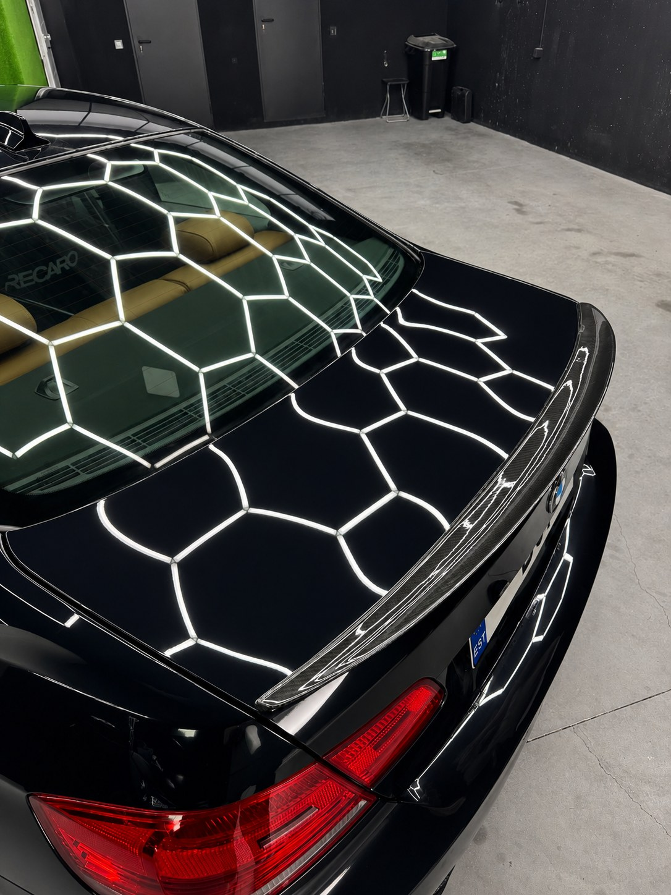
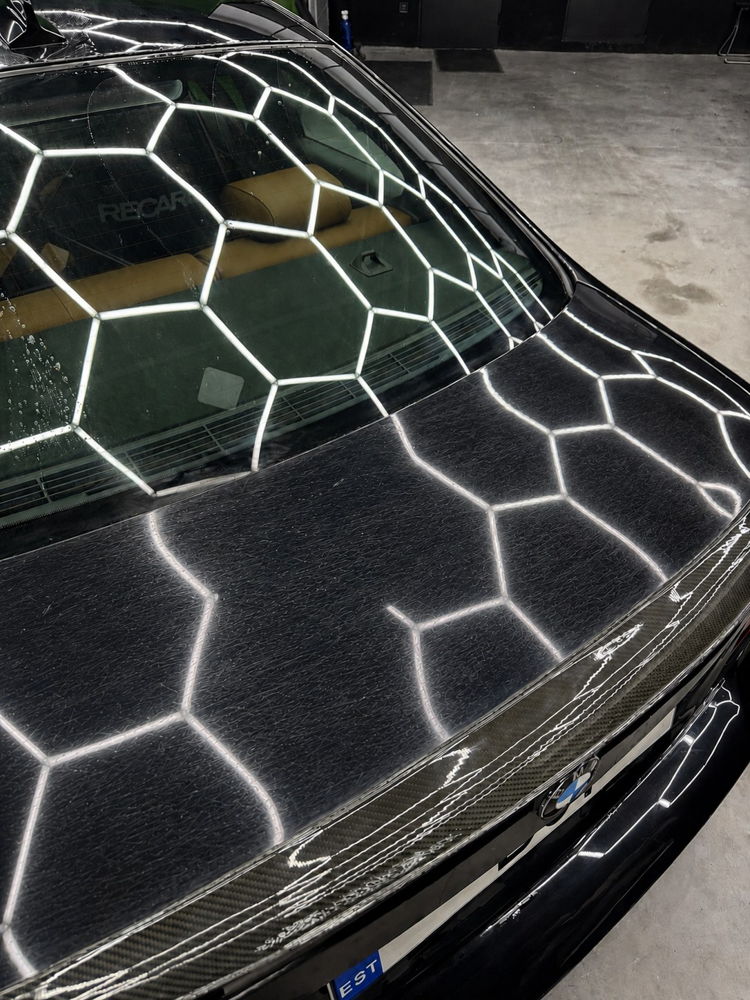

Pulido a máquina multietapa que elimina micro-arañazos, hologramas y oxidación acumulados durante años — devolviendo la profundidad, el brillo y la claridad reales que se escondían bajo la superficie de tu pintura.
Este BMW llegó con años de micro-arañazos de lavado y micro-marcas apagando su negro brillo — la luz dispersándose en todas direcciones en vez de reflejarse limpia.
Evaluamos el estado del barniz, luego cortamos, refinamos y acabamos la pintura a máquina hasta eliminar los defectos. La luz hexagonal ahora se refleja nítida, con reflejos profundos y de aspecto húmedo restaurados.


No hay dos pinturas iguales: el pulido se adapta al estado de tu pintura y al nivel de corrección necesario — desde un realce de una etapa hasta una corrección completa de tres.
La etapa agresiva — eliminando arañazos más profundos, micro-arañazos y oxidación al retirar una capa de barniz de micras precisa.
La turbidez y las micro-marcas que deja el corte se refinan, recuperando claridad y elevando el brillo en todo el panel.
La pasada final de jewelling elimina hologramas y lleva la pintura a un espejo real y sin defectos antes de sellarla.
El brillo se expresa en GU (unidades de brillo): cuanto más alto, más profundo y nítido el reflejo. Resultados típicos en pintura descuidada:
Sant Cugat del Vallès, Barcelona · +34 621 24 44 69